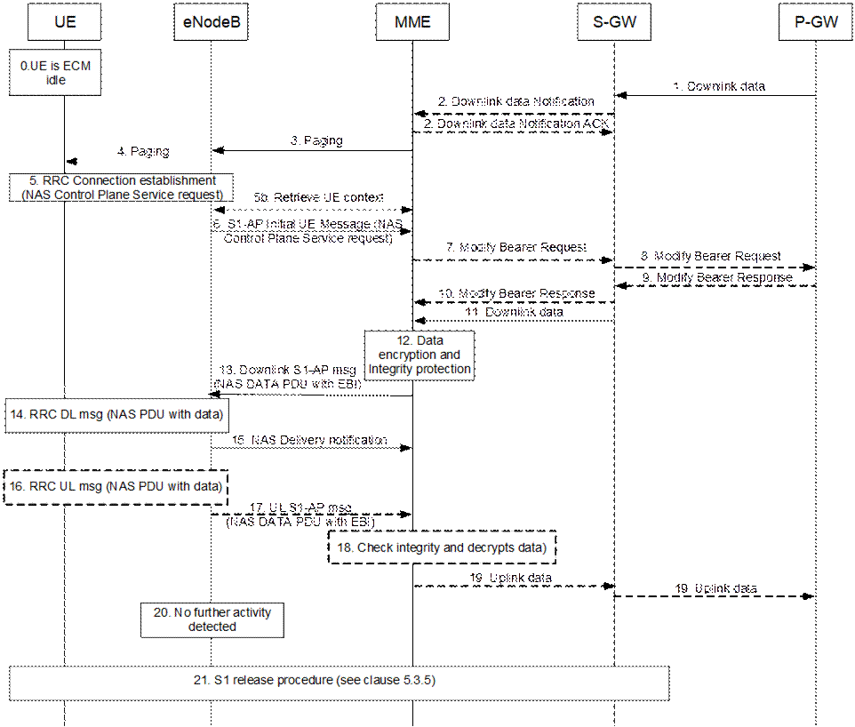
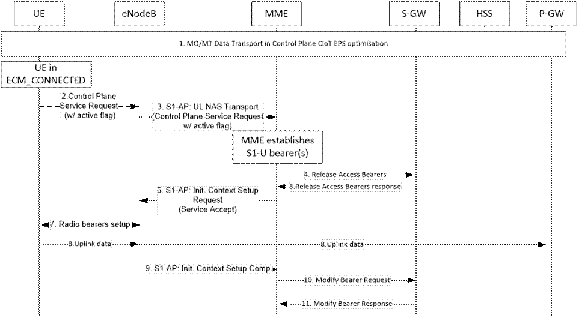

If the UE and MME use the Control Plane CIoT EPS Optimisation, they can transfer data in NAS PDUs including the EPS Bearer Identity of the PDN connection they relate to, for which there is no S1-U bearers established (i.e. when an S1-U bearer is established the UE shall use S1-U to transfer data PDUs). All PDN types are supported. If the UE and the MME support Control Plane CIoT EPS Optimisation, then for SMS transfer and EPC Mobile Originated Location Request (EPC-MO-LR) or EPC Mobile Terminated Location Request (EPC-MT-LR) the Service Request procedures defined in clause 5.3.4 are not used for MO and MT SMS or for EPC-MO-LR and EPC-MT-LR, but instead UE and MME shall be using the Data Transport in Control Plane CIoT EPS Optimisation.
This is accomplished by using the NAS transport capabilities of RRC and S1-AP protocols and the data transport of GTP-u tunnels between MME and S-GW and between S-GW and P-GW, or if a Non-IP connection is provided by via the MME with the SCEF, then data transfer occurs as indicated in TS 23.682 [74].
For IP data, the UE and MME may perform header compression based on ROHC framework IETF RFC 5795 [77]. For uplink IP data, UE implements ROHC compressor, and MME implements the decompressor. For downlink IP data, MME implements the ROHC compressor, and UE implements the decompressor. The uplink and downlink ROHC channels are bound by UE and MME to support feedback. The configurations for the header compression are established during the PDN connection establishment procedure.
To minimise potential conflicts between NAS signalling PDUs and NAS Data PDUs, the MME should complete any security related procedures (e.g. Authetication, Security Mode Command, GUTI reallocation) before alerting the HSS, MSC or SGW of the UE's entry into ECM-CONNECTED state, and before commencing downlink transfer of NAS Data PDUs. The priority handling between the EMM/ESM NAS signalling PDUs and NAS Data PDUs is specified in TS 24.301 [46].
Figure 5.3.4B.2-1: MO Data transport in NAS PDU
0. The UE is ECM-IDLE.
1. The UE establishes a RRC connection or sends the RRCEarlyDataRequest message as defined in TS 36.300 [5] and sends as part of it an integrity protected NAS PDU. The NAS PDU carries the EPS Bearer ID and encrypted Uplink Data. For IP PDN type PDN connections configured to support Header Compression, the UE shall apply header compression before encapsulating data into the NAS message. The UE may also indicate in a NAS Release Assistance Information in the NAS PDU whether no further Uplink or Downlink Data transmissions are expected, or only a single Downlink data transmission (e.g. Acknowledgement or response to Uplink data) subsequent to this Uplink Data transmission is expected.
1b. In the NB-IoT case, the eNB, based on configuration, may retrieve the EPS negotiated QoS profile from the MME, if not previously retrieved. The MME Code within the S-TMSI in the RRCConnectionRequest message is used to identify the MME. In the case of network sharing, the MME Codes shall be unique within the area of overlapping MME pools of the participating operators. The eNB may apply prioritisation between requests from different UEs before triggering step 2 and throughout the RRC connection. The eNB may retrieve additional parameters (e.g., UE Radio Capabilities - see TS 36.413 [36]).
2. The NAS PDU sent in step 1 is relayed to the MME by the eNodeB using a S1-AP Initial UE message. If the RRCEarlyDataRequest message was received in step 1, the eNB includes the "EDT Session" indication in the S1-AP Initial UE message.
To assist Location Services, the eNB indicates the UE's Coverage Level to the MME.
If the NAS Release Assistance Information is received from the UE it overrides the Traffic Profile (see TS 23.682 [74]) and the MME does not send the Traffic Profile to the eNB.
3. If there is a Service Gap timer running in the MME MM Context for the UE and the MME is not waiting for a MT paging response from the UE, the MME rejects the request by discarding the NAS data PDU and sending a Service Reject message to the UE with an appropriate cause. The MME may also provide UE with a Mobility Management Back-off timer set to the remaining value of Service Gap timer, followed by executing step 15.
The MME checks the integrity of the incoming NAS PDU and decrypts the data it contains. When the ROHC is configured to be used, the MME shall decompress the IP header if header compression applies to the PDN connection.
The MME performs (and the UE responds to) any EMM or ESM procedures if necessary, e.g. the security related procedures. Steps 4 to 9 can continue in parallel to this, however, steps 10 and 11 shall await completion of all the EMM and ESM procedures.
4a. If the S11-U connection is not established, the MME sends a Modify Bearer Request message (MME address, MME TEID DL, Delay Downlink Packet Notification Request, RAT Type, LTE-M RAT type reporting to PGW flag, MO Exception data counter) for each PDN connection to the Serving GW. The Serving GW is now able to transmit downlink data towards the UE. The usage of the Delay Downlink Packet Notification Request Information Element is specified in clause 5.3.4.2 with reference to the UE initiated service request procedure, but it equally applies in this case. The MME shall indicate S11-U tunnelling of NAS user data and send its own S11-U IP address and MME DL TEID for DL data forwarding by the SGW. Also, regardless of whether the S11-U was already established:
- If the PDN GW requested UE's location and/or User CSG information and the UE's location and/or User CSG information has changed, the MME shall send the Modify Bearer Request message and also includes the User Location Information IE and/or User CSG Information IE in this message.
- If the Serving Network IE has changed compared to the last reported Serving Network IE then the MME shall send the Modify Bearer Request message and also includes the Serving Network IE in this message.
- If the UE Time Zone has changed compared to the last reported UE Time Zone then the MME shall send the Modify Bearer Request message and include the UE Time Zone IE in this message.
If the RAT type currently used is NB-IOT this shall be reported as different from other E-UTRA flavours.
If the UE is using the LTE-M RAT type and the PDN GW expects the LTE-M RAT type reporting as specified in clause 5.11.5, the MME also includes the LTE-M RAT type reporting to PGW flag to indicate to the Serving GW to forward the LTE-M RAT type to the PDN GW.
The MME only includes MO Exception data counter if the RRC establishment cause is set to "MO exception data" and the UE is accessing via the NB-IoT RAT. The Serving GW indicates each use of this RRC establishment cause by the related counter on its CDR. The MME maintains the MO Exception Data Counter for Serving PLMN Rate Control purposes (see clause 4.7.7.2). The MME may immediately send the MO Exception Data Counter to the Serving GW. Alternatively, in order to reduce signalling, the MME may send the MO Exception Data Counter to the Serving GW as indicated in TS 29.274 [43].
4b If the S11-U connection is established and the UE is accessing via the NB-IoT RAT with the RRC establishment cause set to "MO exception data", the MME should notify the Serving Gateway. The MME maintains the MO Exception Data Counter for Serving PLMN Rate Control purposes (see clause 4.7.7.2). The MME may immediately send the MO Exception Data Counter to the Serving GW. Alternatively, in order to reduce signalling, the MME may send the MO Exception Data Counter to the Serving GW as indicated in TS 29.274 [43].
5. If the RAT Type has changed compared to the last reported RAT Type or if the UE's Location and/or Info IEs and/or UE Time Zone and Serving Network id are present in step 4, the Serving GW shall send the Modify Bearer Request message (RAT Type, MO Exception data counter) to the PDN GW. User Location Information IE and/or User CSG Information IE and/or Serving Network IE and/or UE Time Zone are also included if they are present in step 4.
If LTE-M RAT type and the LTE-M RAT type reporting to PGW flag were received at step 4a, the Serving GW shall include the LTE-M RAT type in the Modify Bearer Request message to the PGW. Otherwise the Serving GW includes RAT type WB-E-UTRAN.
If the Modify Bearer Request message is not sent because of above reasons and the PDN GW charging is paused, then the SGWS-GW shall send a Modify Bearer Request message with PDN Charging Pause Stop Indication to inform the PDN GW that the charging is no longer paused. Other IEs are not included in this message.
If the Modify Bearer Request message is not sent because of above reasons but the MME indicated MO Exception data counter, then the Serving Gateway should notify the PDN GW that this RRC establishment cause has been used by the indication of the MO Exception Data Counter (see TS 29.274 [43]). The Serving GW indicates each use of this RRC establishment cause by the related counter on its CDR.
6. The PDN GW sends the Modify Bearer Response to the Serving GW.
The PDN GW indicates each use of the RRC establishment cause "MO Exception Data" by the related counter on its CDR.
7. If a Modify Bearer Request message was sent at step 4 the Serving GW shall return a Modify Bearer Response (Serving GW address and TEID for uplink traffic) to the MME as a response to a Modify Bearer Request message. The Serving GW address for S11-U User Plane and Serving GW TEID are used by the MME to forward UL data to the SGW.
8. The MME sends Uplink data to the P-GW via the S-GW.
9. If no Downlink Data are expected based on the NAS Release Assistance Information from the UE in step 1, this means that all application layer data exchanges have completed with the UL data transfer, and if the MME is not aware of pending MT traffic and S1-U bearers are not established, step 10 is skipped and step 11 applies.
Otherwise, Downlink data may arrive at the P-GW and the P-GW sends them to the MME via the S-GW. If no data is received steps10-12 are skipped and the eNB may trigger step 14 after step 13 detects no activity. While the RRC connection is active, the UE may still send Uplink data and may receive Downlink data in NAS PDUs that are carried in a S1AP Uplink or (respectively) Downlink messages (not shown in the figure). At any time the UE has no user plane bearers established it may provide NAS Release Assistance Information with the Uplink data. In this case, to assist Location Services, the eNB may indicate, if needed, the UE's Coverage Level to the MME.
10. If Downlink data are received in step 9, the MME encrypts and integrity protects the Downlink data.
11. If step 10 is executed then Downlink data are encapsulated in a NAS PDU and sent to the eNB in a S1-AP Downlink NAS Message. If the configuration in the MME indicates that the eNodeB supports acknowledgements of downlink NAS data PDUs and if acknowledgements of downlink NAS data PDUs are enabled in the subscription information for the UE, the MME indicates in the S1-AP Downlink NAS message that acknowledgment is requested from the eNodeB. For IP PDN type PDN connections configured to support Header Compression, the MME shall apply header compression before encapsulating data into the NAS message. If step 10 is not executed, or NAS Service Accept message is not to be sent, the MME sends Connection Establishment Indication message to the eNB to complete the establishment of the UE-associated logical S1-connection. The UE Radio Capability may be provided from the MME to the eNB in the DL NAS Transport message or Connection Establishment Indication message, and the eNB shall store the received UE Radio Capability information as specified in TS 36.300 [5].
If the NAS Release Assistance Information was received with Uplink data and it indicated that Downlink data was expected, it means that the next downlink packet following the sending of the NAS Release Assistance Information is the last packet of the application layer data exchange, then for this case, unless the MME is aware of additional pending MT traffic and unless S1-U bearers are established, the MME sends a S1 UE Context Release Command immediately after the S1-AP message including the Downlink data encapsulated in NAS PDU as an indication that the eNodeB shall release the RRC connection promptly after successfully sending data to the UE. Alternatively, if "EDT Session" indication was received in step 2, the MME may include End Indication for no further data in the S1-AP message including the Downlink data encapsulated in NAS PDU. If the MME includes the End Indication indicating no further data and if the eNB does not proceed with RRC connection establishment, then the eNB skips step 12a and initiates step 12b.
If the NAS Release Assistance Information was received indicating no Downlink Data expected, it means that all application layer data exchanges have completed with the UL data transfer, then for this case, unless the MME is aware of additional pending MT traffic and unless S1-U bearers are established:
- the MME sends S1AP UE Context Release Command either:
- immediately after the S1AP DL NAS TRANSPORT (NAS Service Accept), in which case steps 12b and 14 are skipped, or
- immediately after S1AP CONNECTION ESTABLISHMENT INDICATION, in which case steps 12a, 12b, 13, and 14 are skipped.
- Alternatively, if the MME received "EDT Session" indication from the eNB in step 2, the MME should include End Indication with no further data in S1AP DL NAS TRANSPORT (NAS Service Accept) or S1AP CONNECTION ESTABLISHMENT INDICATION. If the eNB does not proceed with RRC connection establishment, the eNB skips step 12a and initiates stop 12b.
If the UE is accessing via an NB-IoT cell, or if it is accessing via an WB-E-UTRAN cell and is capable of CE mode B, to determine the NAS PDU retransmission strategy the MME should take into account the transmission delay of the NAS PDU and the CE mode B Restricted parameter stored in the MME's MM context and, if applicable, the CE mode, i.e. set the NAS timers long enough according to the worst transmission delay (see TS 24.301 [46]).
12a. The eNB sends a RRC Downlink data message including the Downlink data encapsulated in NAS PDU. If in step 11 the S1-AP message with the NAS DATA PDU was followed by an S1 UE Context Release Command, step 15 is completed promptly after the Downlink Data transmission of the NAS PDU to the UE and the acknowledgement to MME in step 13 have been completed at the eNB, and the eNB does not need to enter step 14. If header compression was applied to the PDN, the UE would perform header decompression to rebuild the IP header.
12b. If End Indication with no further data is received in S1AP message from the MME, the eNB may send the RRCEarlyDataComplete message with any NAS payload received from step 11 (either NAS data PDU or NAS service accept) as defined in TS 36.300 [5]. Step 14 is skipped in this case.
13. The eNodeB sends a NAS Delivery indication to the MME if requested. If the eNodeB reports an unsuccessful delivery with an S1-AP NAS Non Delivery Indication, the MME should wait for some time until the UE has potentially changed cell and re-established contact with the MME, by which MME should resend the Downlink S1-AP message to the eNodeB, otherwise the MME reports an unsuccessful delivery to the SCEF in case of T6a procedure (see TS 23.682 [74], clause 5.13.3). If the eNodeB reports a successful delivery with an S1-AP NAS Delivery Indication and if the Downlink data was received over the T6a interface, the MME should respond to the SCEF (see TS 23.682 [74], clause 5.13.3). If the eNodeB does not support S1-AP NAS delivery indications, the MME indicates a cause code 'Success Unacknowledged Delivery' to the SCEF otherwise 'Success Acknowledged Delivery', for the SCEF to know if reliable delivery was possible or not.
14. If no NAS PDU activity exists for a while, the eNB starts an S1 release in step 15.
15. An S1 release procedure according to clause 5.3.5 triggered by the eNodeB or MME. Alternatively, if the MME in step 11 sent S1 UE Context Release Command then the procedure starts with step 5 in clause 5.3.5, or Connection Suspend Procedure defined in clause 5.3.4A. The UE and the MME shall store the ROHC configuration and context for the uplink/downlink data transmission when entering ECM_CONNECTED state next time.

Figure 5.3.4B.3-1: MT Data transport in NAS PDUs
0. The UE is EPS attached and in ECM-Idle mode.
1. When the S-GW receives a downlink data packet/control signalling for a UE, if the S- GW context data indicates no downlink user plane TEID towards the MME), it buffers the downlink data packet and identifies which MME is serving that UE.
If that MME has requested the Serving GW to throttle downlink low priority traffic and if the downlink data packet is received on a low priority bearer to be throttled (see clause 4.3.7.4.1a), the S-GW drops the downlink data. The steps below are not executed.
If that MME has requested the S‑GW to delay sending the Downlink Data Notification (see clause 5.3.4.2 on "Handling of abnormal conditions in UE triggered Service Request"), the Serving GW buffers the downlink data and waits until the timer expires before continuing with step 2. If the DL-TEID and MME address for that UE is received before the expiry of the timer, the timer shall be cancelled and the Mobile Terminated Data transport procedure is progressed from step 11 as Downlink data are sent to the UE.
If the Serving GW receives additional downlink data packets/control signalling for this UE before the expiry of the timer, the Serving GW does not restart this timer.
2. If the Serving GW is buffering data in step 1, the Serving GW sends a Downlink Data Notification message (ARP, EPS Bearer ID) to the MME for which it has control plane connectivity for the given UE. The ARP and EPS Bearer ID are always set in Downlink Data Notification. The MME responds to the S‑GW with a Downlink Data Notification Ack message.
An MME detects that the UE is in a power saving state (e.g. Power Saving Mode) and cannot be reached by paging at the time of receiving Downlink data notification, shall invoke extended buffering depending on operator configuration, except for cases described in next paragraphs. The MME derives the expected time before radio bearers can be established to the UE. The MME then indicates Downlink Buffering Requested to the Serving GW in the Downlink Data Notification Ack message and includes a Downlink Buffering Duration time and optionally a Downlink Buffering Suggested Packet Count. The MME stores a new value for the Downlink Data Buffer Expiration Time in the MM context for the UE based on the Downlink Buffering Duration time and skips the remaining steps of this procedure. The Downlink Data Buffer Expiration Time is used for UEs using power saving state and indicates that there are buffered data in the Serving GW and that the user plane setup procedure is needed when the UE makes signalling with the network. When the Downlink Data Buffer Expiration Time has expired, the MME considers no Downlink data to be buffered and no indications of Buffered Downlink Data Waiting are sent during context transfers at TAU procedures.
If there is an "Availability after DDN Failure" monitoring event configured for the UE in the MME, the MME does not invoke extended buffering. Instead, the MME sets the Notify-on-available-after-DDN-failure flag to remember to send an "Availability after DDN Failure" notification when the UE becomes available. If there is a "UE Reachability" monitoring event configured for the UE in the MME, the MME does not invoke extended buffering.
NOTE 1: When "Availability after DDN failure" and "UE reachability" monitoring events are used for a UE, the application server is assumed to send data only when the UE is reachable, hence no extended buffering is needed. If there are multiple application servers, the event notifications and extended buffering may be needed simultaneously. It is assumed this is handled through additional information based on SLA as described in the next paragraph.
The MME may use additional information based on a SLA with the MTC user for when to invoke extended buffering, e.g. only invoke it for a certain APN, do not invoke it for certain subscribers, invoke extended buffering in conjunction with "Availability after DDN failure" and "UE reachability" monitoring events, etc.
A Serving GW that receives a Downlink Buffering Requested indication in a Downlink Data Notification Ack message stores a new value for the Downlink Data Buffer Expiration Time based on the Downlink Buffering Duration time and does not send any additional Downlink Data Notification if subsequent downlink data packets are received in the Serving GW before the buffer time Downlink Data Buffer Expiration Time has expired for the UE.
If the Serving GW, while waiting for the user plane to be established, is triggered to send a second Downlink Data Notification for a bearer with higher priority (i.e. ARP priority level) than that of the bearer for which the first Downlink Data Notification was sent, the S-GW sends a new Downlink Data Notification message indicating the higher priority to the MME. If the Serving GW receives additional downlink data packets for a bearer with same or lower priority than the first Downlink Data Notification was sent for or if the Serving GW has sent the second Downlink Data Notification message indicating the higher priority and receives additional downlink data packets for this UE, the Serving GW buffers these downlink data packets and does not send a new Downlink Data Notification.
If the Serving GW, while waiting for the user plane to be established, receives a Modify Bearer Request message from an MME other than the one it sent a Downlink Data Notification message to, the Serving GW re-sends the Downlink Data Notification message but only to the new MME from which it received the Modify Bearer Request message.
Upon reception of a Downlink Data Notification Ack message with an indication that the Downlink Data Notification message has been temporarily rejected and if the Downlink Data Notification is triggered by the arrival of downlink data packets at the Serving GW, the Serving GW may start a locally configured guard timer and buffers all downlink user packets received to the given UE and waits for a Modify Bearer Request message to come. Upon reception of a Modify Bearer Request message, the Serving GW re-sends the Downlink Data Notification message but only to the new MME from which it received the Modify Bearer Request message. Otherwise the Serving GW releases buffered downlink user packets upon expiry of the guard timer or upon receiving the Delete Session Request message from MME.
If the S11-U is already established (buffering is in the MME), step 2 is not executed and step 11 is immediately executed. Steps 7,8,9,10 are executed only if conditions are met when the NAS control plane service request is received at step 6, as outlined below in the respective clauses.
An MME detecting that the UE is in a power saving state (e.g. Power Saving Mode) and cannot be reached by paging at the time of receiving Downlink data, shall start extended buffering depending on operator configuration, except for cases described in next paragraphs. The MME derives the expected time before radio bearers can be established to the UE, stores a new value for the Downlink Data Buffer Expiration Time in the MM context for the UE and skips the remaining steps of this procedure. When the Downlink Data Buffer Expiration Time has expired, the MME considers no Downlink data to be buffered.
Also for the case of buffering in the MME the "Availability after DDN Failure" monitoring event can be configured for the UE, even though the actual DDN is not received and the Downlink data is received. The "UE Reachability" monitoring event can be configured.also. The extended buffering can also be configured as per what is described above in this step of the procedure for the case of buffering in S-GW.
3. If the UE is registered in the MME and considered reachable, the MME sends a Paging message (NAS ID for paging, TAI(s), UE identity based DRX index, Paging DRX length, list of CSG IDs for paging, Paging Priority indication, Enhanced Coverage Restricted, CE mode B Restricted) to each eNodeB belonging to the tracking area(s) in which the UE is registered.
Paging priority indication is included only:
- if the MME receives a Downlink Data Notification (or a Downlink packet for a EPS bearer, for the case of buffering in MME) with an ARP priority level associated with priority services, as configured by the operator.
- One Paging Priority level can be used for multiple ARP priority level values. The mapping of ARP priority level values to Paging Priority level (or levels) is configured by operator policy.
During a congestion situation the eNodeB may prioritise the paging of UEs according to the Paging Priority indications.
If the MME, while waiting for a UE response to the Paging Request message sent without Paging Priority indication, receives a Downlink Data Notification (or a Downlink packet for a EPS bearer, for the case of buffering in MME) which indicates an ARP priority level associated with priority services, as configured by the operator, the MME shall send another paging message with the suitable Paging Priority.
When the MME is configured to support CSG paging optimisation in the CN, the MME should avoid sending Paging messages to those eNodeB(s) with CSG cells for which the UE does not have a CSG subscription. When the MME is configured to support CSG paging optimisation in the HeNB Subsystem, the list of CSG IDs for paging is included in the Paging message. For CSG paging optimisation, the CSG IDs of expired CSG subscriptions and valid CSG subscriptions are both included in the list. If the UE has emergency bearer service the MME shall not perform the CSG paging optimisation.
NOTE 2: An expired CSG subscription indicates that the UE is not allowed service in the CSG. However, since the removal of the CSG from the UE is pending, it is possible the UE will camp on that CSG and therefore the UE is still paged for the CSG.
NOTE 3: The eNodeB reports to the MME the CSG ID supported. For More detail of this procedure refer to TS 36.413 [36].
Paging strategies may be configured in the MME. Paging strategies may include:
- paging retransmission scheme (e.g. how frequently the paging is repeated or with what time interval);
- determining whether to send the Paging message to the eNodeBs during certain MME high load conditions;
- whether to apply sub-area based paging (e.g. first page in the last known ECGI or TA and retransmission in all registered TAs).
NOTE 4: The Paging priority in the Paging message is set based on priority level of the ARP IE received in Downlink Data Notification or Create/Update Bearer Request message and is independent from any paging strategy.
The MME and the E-UTRAN may support further paging optimisations in order to reduce the signalling load and the network resources used to successfully page a UE by one or several following means:
- by the MME implementating specific paging strategies (e.g. the S1 Paging message is sent to the eNB that served the UE last);
- by the MME considering Information On Recommended Cells And eNodeBs provided by the E-UTRAN at transition to ECM IDLE. The MME takes the eNB related part of this information into account to determine the eNBs to be paged, and provides the information on recommended cells within the S1 Paging message to each of these eNBs;
- by the E-UTRAN considering the Paging Attempt Count Information provided by the MME at paging.
When implementing such optimisations/strategies, the MME shall take into account any PSM active timer and the DRX interval for the UE.
If the UE Radio Capability for Paging Information is available in the MME, the MME adds the UE Radio Capability for Paging Information in the S1 Paging message to the eNB.
If the Information on Recommended Cells And ENBs For Paging is available in the MME, the MME shall take that information into account to determine the eNBs for paging and, when paging an eNB, the MME may transparently convey the information on recommended cells to the eNB.
The MME may include in the S1AP Paging message(s) the paging attempt count information. The paging attempt count information shall be the same for all eNBs selected by the MME for paging.
If the MME has Information for Enhanced Coverage stored and Enhanced Coverage is not restricted then the MME shall include Information for Enhanced Coverage in the Paging message for all eNBs selected by the MME for paging. For including the Enhanced Coverage Restricted parameter in the paging message, see clause 4.3.28.
For including the CE mode B Restricted parameter in the Paging message, see clause 4.3.27a.
4. If eNodeBs receive paging messages from the MME, the UE is paged by the eNodeBs.
5. As the UE is in the ECM-IDLE state, upon reception of paging indication, the UE sends Control Plane Service Request NAS message (as defined in TS 24.301 [46]) over RRC Connection request and S1-AP initial message. The Control Plane Service Request NAS message, when Control Plane CIoT EPS Optimisation applies, does not trigger Data radio bearer establishment by the MME and the MME can immediately send Downlink Data it receives using a NAS PDU to the eNodeB. The MME supervises the paging procedure with a timer. If the MME receives no response from the UE to the Paging Request message, it may repeat the paging according to any applicable paging strategy described in step 3.
5b. In the NB-IoT case, the eNB, based on configuration, may retrieve the EPS negotiated QoS profile from the MME, if not previously retrieved. The MME Code within the S-TMSI in the RRCConnectionRequest message is used to identify the MME. In the case of network sharing, the MME Codes shall be unique within the area of overlapping MME pools of the participating operators. The eNB may apply prioritisation between requests from different UEs before triggering step 6 and throughout the RRC connection. The eNB may retrieve additional parameters (e.g., UE Radio Capabilities - see TS 36.413 [36]).
6. If the MME receives no response from the UE after this paging repetition procedure, it shall use the Downlink Data Notification Reject message to notify the Serving GW about the paging failure (or, equivalently, if the buffering is in the MME, the MME simply discards data for the UE locally), unless the MME is aware of an ongoing MM procedure that prevents the UE from responding, i.e. the MME received a Context Request message indicating that the UE performs TAU with another MME. When a Downlink Data Notification Reject message is received, the Serving GW deletes the buffered packet(s). The Serving GW may invoke the procedure PDN GW Pause of Charging (clause 5.3.6A) if UE is in ECM IDLE and the PDN GW has enabled "PDN charging pause" feature. If buffering is in the MME, Pause Charging is triggered by the MME via a Release Access Bearer Request to the S-GW(not shown in Figure 5.3.4B.3-1) including a "Abnormal Release of Radio Link" cause , which releases the S11-U.
NOTE 5: The Serving GW (or MME, in the case of buffering in the MME) may initiate the procedure P-GW Pause of Charging at any time before step 5 if the UE is in ECM IDLE and the P-GW has indicated that the feature is enabled for this PDN. See clause 5.3.6A.0.
To assist Location Services, the eNB indicates the UE's Coverage Level to the MME.
The MME performs (and the UE responds to) any EMM or ESM procedures if necessary, e.g. the security related procedures. Steps 7 to 11 can continue in parallel to this, however, steps 12 and 13 shall await completion of all the EMM and ESM procedures.
7. If the S11-U is not established, the MME sends a Modify Bearer Request message (MME address, MME TEID DL, Delay Downlink Packet Notification Request, RAT Type, LTE-M RAT type reporting to PGW flag) for each PDN connection to the Serving GW. The Serving GW is now able to transmit downlink data towards the UE. The usage of the Delay Downlink Packet Notification Request Information Element is specified in clause 5.3.4.2 with reference to the UE initiated service request procedure, but it equally applies in this case. The MME shall indicate S11-U tunnelling of NAS user data and send its own S11-U IP address and MME DL TEID for DL data forwarding by the SGW. Also, regardless of whether the S11-U was already established:
- If the P-GW requested UE's location and/or User CSG information and the UE's location and/or User CSG information has changed, the MME shall send the Modify Bearer Request message and also includes the User Location Information IE and/or User CSG Information IE in this message.
- If the Serving Network IE has changed compared to the last reported Serving Network IE then the MME shall send the Modify Bearer Request message and also includes the Serving Network IE in this message.
- If the UE Time Zone has changed compared to the last reported UE Time Zone then the MME shall send the Modify Bearer Request message and include the UE Time Zone IE in this message.
If the RAT type currently used is NB-IOT this shall be reported as different from other -E-UTRA flavours.
If the UE is using the LTE-M RAT type and the PDN GW expects the LTE-M RAT type reporting as specified in clause 5.11.5, the MME also includes the LTE-M RAT type reporting to PGW flag to indicate to the Serving GW to forward the LTE-M RAT type to the PDN GW.
8. If the RAT Type has changed compared to the last reported RAT Type or if the UE's Location and/or Info IEs and/or UE Time Zone and Serving Network id are present in step 7, the Serving GW shall send the Modify Bearer Request message (RAT Type) to the P-GW. User Location Information IE and/or User CSG Information IE and/or Serving Network IE and/or UE Time Zone are also included if they are present in step 7.
If LTE-M RAT type and the LTE-M RAT type reporting to PGW flag were received at step 7, the Serving GW shall include the LTE-M RAT type in the Modify Bearer Request message to the PGW. Otherwise the Serving GW includes RAT type WB-E-UTRAN.
If the Modify Bearer Request message is not sent because of above reasons and the PDN GW charging is paused, then the S-GW shall send a Modify Bearer Request message with PDN Charging Pause Stop Indication to inform the PDN GW that the charging is no longer paused. Other IEs are not included in this message.
9. The PDN GW sends the Modify Bearer Response to the Serving GW.
10. If a Modify Bearer Request message was sent at step 7, the Serving GW shall return a Modify Bearer Response (Serving GW address and TEID for uplink traffic) to the MME as a response to a Modify Bearer Request message. The Serving GW address for S11-U User Plane and Serving GW TEID are used by the MME to forward UL data to the SGW.
11. Buffered (if S11-U was not established) Downlink data is sent by the S-GW to the MME.
12-13. The MME encrypts and integrity protects Downlink data and sends it to the eNodeB using a NAS PDU carried by a Downlink S1-AP message. If the configuration in the MME indicates that the eNodeB supports acknowledgements of downlink NAS data PDUs and if acknowledgements of downlink NAS data PDUs are enabled in the subscription information for the UE, the MME indicates in the Downlink S1-AP message that acknowledgment is requested from the eNodeB. For IP PDN type PDN connections configured to support Header Compression, the MME shall apply header compression before encapsulating data into the NAS message. Alternatively and if the MME decides that S1-U bearers need to be established in case the UE and MME accept User Plane EPS Optimisation or S1-U data transfer, steps 4-12 from clause 5.3.4.1 are followed.
If the UE is accessing via an NB-IoT cell, or if it is accessing via an WB-E-UTRAN cell and is capable of CE mode B, to determine the NAS PDU retransmission strategy the MME should take into account the transmission delay of the NAS PDU and the CE mode B Restricted parameter stored in the MME's MM context and, if applicable, the CE mode, i.e. set the NAS timers long enough according to the worst transmission delay (see TS 24.301 [46]).
14. The NAS PDU with data is delivered to the UE via a Downlink RRC message. This is taken by the UE as implicit acknowledgment of the Service Request message sent in step 5. If header compression was applied, to the PDN, the UE shall perform header decompression to rebuild the IP header.
15. The eNodeB sends a NAS Delivery indication to the MME if requested. If the eNodeB reports an unsuccessful delivery with an S1-AP NAS Non Delivery Indication, the MME should wait for some time until the UE has potentially changed cell and re-established contact with the MME, by which MME should resend the Downlink S1-AP message to the eNodeB, otherwise the MME reports an unsuccessful delivery to the SCEF in case of T6a procedure (see TS 23.682 [74], clause 5.13.3). If the eNodeB reports a successful delivery with an S1-AP NAS Delivery Indication and if the Downlink data was received over the T6a interface, the MME should respond to the SCEF (see TS 23.682 [74], clause 5.13.3). If the eNodeB does not support S1-AP NAS delivery indications, the MME indicates a cause code 'Success Unacknowledged Delivery' to the SCEF otherwise 'Success Acknowledged Delivery', for the SCEF to know if reliable delivery was possible or not.
16. While the RRC connection is still up, further Uplink and Downlink data can be transferred using NAS PDUs. In step 17 an Uplink data transfer is shown using an Uplink RRC message encapsulating a NAS PDU with data. At any time the UE has no user plane bearers established, the UE may provide a Release Assistance Information with Uplink data in the NAS PDU.
For IP PDN type PDN connections configured to support Header Compression, the UE shall apply header compression before encapsulating it into the NAS message.
17. The NAS PDU with data is send to the MME in a Uplink S1-AP message.
To assist Location Services, the eNB may indicate, if changed, the UE's Coverage Level to the MME.
If the Release Assistance Information is received from the UE it overrides the Traffic Profile (see TS 23.682 [74]) and the MME does not send the Traffic Profile to the eNB.
18. The data is checked for integrity and decrypted. If header compression was applied to the PDN, the MME shall perform header decompression to rebuild the IP header.
19. The MME sends Uplink data to the PDN GW via the S-GW and executes any action related to the presence of Release Assistance Information as follows:
- for the case where the Release Assistance Information indicates there is no downlink data to follow the uplink data then unless the MME is aware of pending MT traffic, and unless S1-U bearers exist, the MME immediately releases the connection and therefore step 21 is executed.
- for the case where the Release Assistance Information indicates that downlink data will follow the uplink transmission then unless the MME is aware of additional pending MT traffic and unless S1-U bearers exist, the MME sends a S1 UE Context Release Command to the eNodeB immediately after the S1-AP message including the Downlink data encapsulated in NAS PDU.
20. If no NAS activity exists for a while the eNB detects inactivity and executes step 21.
21. The eNB starts an eNodeB initiated S1 release procedure according to clause 5.3.5 or Connection Suspend Procedure defined in clause 5.3.4A. The UE and the MME shall store the ROHC configuration and context for the uplink/downlink data transmission when entering ECM_CONNECTED state next time.

Figure 5.3.4B.4-1: Establishment of S1-U bearer during Data Transport in Control Plane CIoT EPS Optimisation
UE or MME can use this procedure if the UE and MME successfully negotiate S1-U data transfer or User Plane CIoT EPS Optimisation in addition to Control Plane CIoT EPS Optimisation based on the Preferred and Supported Network Behaviour as defined in clause 4.3.5.10. The MME either because it has received the NAS message as defined in steps 2-3 or the MME decides that S1-U based data transfer is now preferred e.g. determined by the size of data transferred in UL and DL using Control Plane CIoT EPS Optimisation triggers the establishment of S1-U bearer(s). The MME checks if the UE can support the establishment of required number of additional user plane radio bearers based on the maximum number of user plane radio bearers indicated by UE in the UE Network Capability IE as defined in clause 5.11.3. If the MME takes the decision that S1-U data transfer is now preferred steps 2-3 are not needed.
1. UE is sending and receiving data in NAS PDUs using the Control Plane CIoT EPS Optimisation.
2. The UE may be triggered to establish user plane bearers and sends a Control Plane Service Request with an active flag towards the MME encapsulated in an RRC message to the eNodeB. The RRC message and this NAS message are described in TS 36.300 [5] and TS 24.301 [46] respectively.
3. The eNodeB forwards the Control Plane Service Request with active flag to MME. NAS message is encapsulated in an S1-AP UL NAS Transport Message (NAS message, TAI+ECGI of the serving cell, S-TMSI, CSG ID, CSG access Mode). Details of this step are described in TS 36.300 [5]. If the MME receives the Control Plane Service Request with active flag defined in steps 2-3 it shall establish S1-U bearer(s) and execute the transfer. If the MME cannot handle the procedure associated to the Control Plane Service Request with active flag, it shall reject it. CSG ID is provided if the UE sends the NAS message via a CSG cell or a hybrid cell. CSG access mode is provided if the UE sends the NAS message via a hybrid cell. If the CSG access mode is not provided but the CSG ID is provided, the MME shall consider the cell as a CSG cell.If a CSG ID is indicated and CSG access mode is not provided, and there is no subscription data for this CSG ID and associated PLMN or the CSG subscription is expired, the MME rejects the Control Plane Service Request with an appropriate cause. The UE shall remove the CSG ID and associated PLMN of the cell where the UE has initiated the service request procedure from the Allowed CSG list, if present.
4. The MME shall send any remaining UL data over S11-U and in order to minimize the possible occurrence of out of order DL data e.g. caused by earlier DL data which were sent on the Control Plane may send a Release Access Bearers Request message to the Serving GW that requests the release of all S11-U bearers for the UE. The MME locally deletes any existing ROHC context used for Control Plane CIoT EPS Optimisation, and other S11-U related information in UE context, including TEID (DL) for the S11-U, etc, but not the Header Compression Configuration.
NOTE: The MME may use the "Delay Downlink Packet Notification Request" causing the Serving GW to not send Downlink Data Notifications as described in clause 5.3.4.2 to minimize the impact of possible Downlink Data Notifications this step may cause.
5. If the Serving GW receives the Release Access Bearers Request message it releases all MME related information (address and downlink TEIDs) for the UE and responds with a Release Access Bearers Response message to the MME. Other elements of the UE's Serving GW context are not affected. If downlink packets arrive for the UE, the Serving GW starts buffering downlink packets received for the UE and initiating the "Network Triggered Service Request" procedure, described in clause 5.3.4.3.
6. The MME sends S1-AP Initial Context Setup Request (Serving GW address, S1-TEID(s) (UL), EPS Bearer QoS(s), Security Context, MME Signalling Connection Id, Handover Restriction List, CSG Membership Indication, Service Accept) message to the eNodeB for all PDN connections that MME has not included Control Plane Only Indicator in ESM request. The MME responds to the UE with a Service Accept message. The eNodeB stores the Security Context, MME Signalling Connection Id, EPS Bearer QoS(s) and S1-TEID(s) in the UE RAN context. The step is described in detail in TS 36.300 [5]. Handover Restriction List is described in clause 4.3.5.7 "Mobility Restrictions".
7. If the Control Plane Service Request is performed via a hybrid cell, CSG Membership Indication indicating whether the UE is a CSG member shall be included in the S1-AP message from the MME to the RAN. Based on this information the RAN can perform differentiated treatment for CSG and non-CSG members. The eNodeB performs the radio bearer establishment procedure. The user plane security is established at this step, which is described in detail in TS 36.300 [5]. The UE needs to locally delete any existing ROHC context used for Control Plane CIoT EPS Optimisation. When the user plane radio bearers are setup, EPS bearer state synchronization is performed between the UE and the network, i.e. the UE shall locally remove any EPS bearer for which the MME has not included Control Plane Only Indicator in ESM request and for which no radio bearers are setup. If the radio bearer for a default EPS bearer is not established, the UE shall locally deactivate all EPS bearers associated to that default EPS bearer.
8. As the user plane radio bearers are setup the UE shall use user plane bearers to transfer data PDUs, except for EPS bearers the MME has included Control Plane Only Indicator in ESM request and for which Control Plane CIoT EPS Optimisation is still be used. The uplink data from the UE can now be forwarded by eNodeB to the Serving GW. The eNodeB sends the uplink data to the Serving GW address and TEID provided in the step 6. The Serving GW forwards the uplink data to the PDN GW.
9. The eNodeB sends an S1-AP message Initial Context Setup Complete (eNodeB address, List of accepted EPS bearers, List of rejected EPS bearers, S1 TEID(s) (DL)) to the MME. This step is described in detail in TS 36.300 [5].
10. The MME sends a Modify Bearer Request message (eNodeB address, S1 TEID(s) (DL) for the accepted EPS bearers, Delay Downlink Packet Notification Request, RAT Type) per PDN connection to the Serving GW. If the Serving GW supports Modify Access Bearers Request procedure and if there is no need for the Serving GW to send the signalling to the PDN GW, the MME may send Modify Access Bearer Request (eNodeB address(es) and TEIDs for downlink user plane for the accepted EPS bearers, Delay Downlink Packet Notification Request) per UE to the Serving GW to optimise the signalling. The Serving GW is now able to transmit downlink data towards the UE.
11. The Serving GW shall return a Modify Bearer Response (Serving GW address and TEID for uplink traffic) to the MME as a response to a Modify Bearer Request message, or a Modify Access Bearers Response (Serving GW address and TEID for uplink traffic) as a response to a Modify Access Bearers Request message. If the Serving GW cannot serve the MME Request in the Modify Access Bearers Request message without S5/S8 signalling other than to unpause charging in the PDN GW or without corresponding Gxc signalling when PMIP is used over the S5/S8 interface, it shall respond to the MME with indicating that the modifications are not limited to S1-U bearers, and the MME shall repeat its request using a Modify Bearer Request message per PDN connection.
For intra-NB-IoT mobility for UE and MME using Control Plane CIoT EPS
Optimisation the eNB CP Relocation Indication procedures may be used. The
purpose of the eNB CP Relocation Indication procedure is to request the MME to
authenticate the UE's re-establishment request as described in TS 33.401 [41],
and initiate the establishment of the UE's S1 connection and, if necessary, the
S11-U connection after the UE has initiated a RRC Re-establishment procedure in
a new eNB.
More details are defined in TS 36.300 [5].